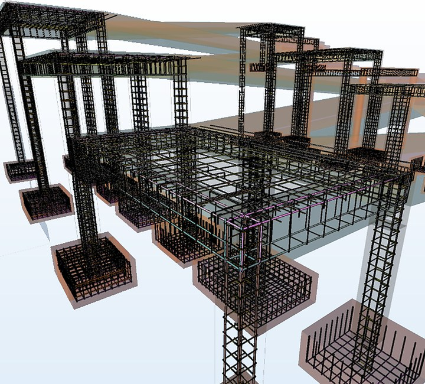
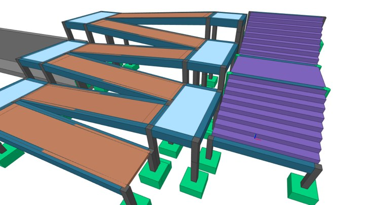
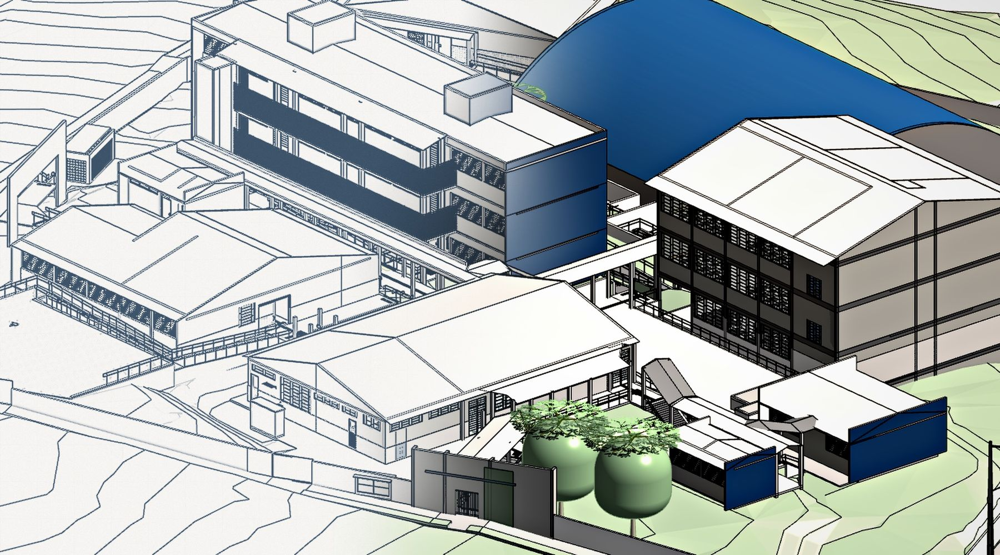

DEMELLO Engenharia
Vai construir ou ampliar?
Descubra quais projetos sua obra pode precisar e veja uma estimativa inicial.
Sem compromisso · contato somente no final
Escolha a sua situação
O que você precisa resolver?
Comece pela situação. O nome técnico vem depois.
Construir uma casa
Com a arquitetura pronta ou só com a ideia. Veja quais projetos a obra pode precisar — e uma estimativa inicial.
Quero construir →Ampliar ou reformar
O imóvel já existe e vai mudar. Diga o que tem e o que quer mudar. A estimativa vem primeiro.
Quero ampliar ou reformar →Regularizar um imóvel
Divergência de área, exigência de prefeitura ou cartório.
Avaliar um problema
Algo apareceu no imóvel ou na obra, ou você tem uma dúvida técnica.
Precisa de orientação ou apoio técnico por hora? Consultoria e mentoria técnica.
Presença técnica consolidada no Sul e Sudeste.
Acervo profissional do fundador — não o acervo operacional da DEMELLO ENG. Ver a experiência técnica →
Como funciona a estimativa
Primeiro a estimativa. Depois o seu contato.
Escolha a sua situação
Construir ou ampliar, regularizar, avaliar um problema ou ir direto ao serviço.
Responda só o que se aplica
As perguntas mudam conforme o seu caso. Não sabe uma medida? Marque “Ainda não sei”.
Veja a estimativa na página
O cálculo sai ali mesmo, pela tabela DEMELLO. Regra fixa, não inteligência artificial.
Decida o próximo passo
Receber uma proposta ou tirar uma dúvida sobre o escopo. Só então pedimos o seu contato.
A estimativa é um valor inicial calculado na própria página pela tabela DEMELLO — não é proposta, contrato nem garantia de preço. Alguns casos precisam de avaliação técnica antes de um valor. O envio para a DEMELLO só acontece quando você conclui e confirma — receber o caso não é aceite comercial.
Sem compromisso · contato somente no final
Antes de começar
Dúvidas que costumam travar o primeiro passo
“Não sei quais projetos preciso.”
Não precisa saber. Marque “Não sei quais preciso”: sugerimos, você confirma. É sugestão ilustrativa — o escopo é confirmado pela equipe.
“Não quero deixar meu contato agora.”
Não precisa. Primeiro a estimativa. Depois o seu contato — e só se você confirmar o envio.
“Meu caso é diferente.”
Alguns casos precisam de avaliação técnica antes de um valor. Nesses, você recebe o enquadramento e decide se envia o caso à equipe.
O que isso muda para a sua obra
Menos promessa. Menos retrabalho. Mais engenharia de verdade.
Projetos que conversam entre si
Estrutura, instalações e arquitetura no mesmo modelo. Uma decisão não atrapalha a outra.
Menos retrabalho na obra
Problema identificado no projeto é só ajuste. Na obra é atraso — dinheiro perdido.
Uma pessoa responsável
Você fala com quem projeta, decide e assume a responsabilidade técnica.
Clareza antes de contratar
Você vê a estimativa — e entende o que ela é e o que não é — antes de falar com alguém.

Já sei o serviço
Vá direto ao projeto ou serviço de que precisa.

Experiência selecionada
Colégio Cívico Militar Djalma Marinho — Campo Largo/PR
Terreno com aproximadamente 16 metros de desnível, nove blocos existentes e uma ampliação que levaria o conjunto a dez. Arquitetura, estrutural, hidrossanitário, prevenção contra incêndio, terraplenagem, orçamento e regularização, desenvolvidos e compatibilizados em BIM sob um único responsável técnico.
Atuação de Marcos de Mello Silva, anterior à DEMELLO Engenharia.
Ver o case completo →Projeto em movimento
Perguntas frequentes
O que as pessoas perguntam antes de calcular
Preciso saber quais projetos contratar?
Não. Você escolhe a situação mais próxima do seu caso e responde só ao que se aplica. Se não souber quais projetos precisa, marque “Não sei quais preciso” e confirme a sugestão ilustrativa — o escopo final é confirmado pela equipe.
A estimativa é uma proposta ou um preço garantido?
Não. É um valor inicial calculado na própria página pela tabela DEMELLO. Não é proposta, contrato nem garantia de preço, e o escopo final é confirmado pela equipe.
Preciso informar meu contato para ver a estimativa?
Não. O resultado aparece antes. O contato só é pedido no final, depois que você escolhe entre receber uma proposta e tirar uma dúvida sobre o escopo.
E se o meu caso não puder ser calculado na página?
Alguns casos precisam de avaliação técnica antes de um valor. Nesses, você recebe o enquadramento do caso e pode enviá-lo à equipe para avaliação.
A DEMELLO executa a obra?
Não. A DEMELLO desenvolve projetos e serviços técnicos de engenharia civil; a execução da obra não faz parte dos serviços.
O que acontece com as fotos que eu adicionar?
As fotos ficam apenas na sua página, sem análise automática, e não são enviadas à DEMELLO.
Sua obra começou e as disciplinas estão se conhecendo só agora?
Nessa novela, a DEMELLO prefere spoiler.
Sem compromisso · contato somente no final